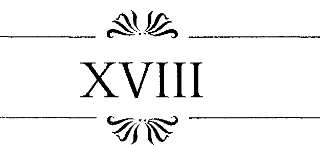

HÜSEYİN'İN DAVRANIŞI ÜSTÜNE düşündüklerimde yanılmamıştım. Sabah namazdan d ö n ü p , beni uyandırdığında iyi haberi verdi: O ve kayınpederi, Sofia Baffo'nun satışıyla ilgili olarak ortaya elli kuruş koymaya karar vermişlerdi.
Haliç'te yaptığımız bir tur sonunda, yüz elli kuruşluk bir umut daha doğmuştu. Benim memleketlilerimin yaşadığı Galata'da, Venedik büyükelçisi ve Vali Baffo'yıı tanıyan başka ince ruhlu insanlar memnuniyetle yardımlarını sunmaya karar vermişlerdi.
Amcamla olan deneyimlerimden biliyordum, Konstantinopolis'te paranın kime ait olduğu durumu değiştirmiyordu. Venedik, Hollanda, Alman parası fark etmiyordu, yeter ki olsundu. Türkler bunları kendilerininkinden bile daha değerli buluyorlardı, çünkü imparatorluğun bir yığın eyaletinin ayrı ayrı bastığı paralar kendi aralarında dahi bir ortak değere sahip değildi. H e r biri ayrı bir ayarda, ayrı bir ağırlıktaydı.
M ü s l ü m a n âleminde resim yasaktı, sadece Sultan Süleyman b u n u yıkarak Arap şekillerinin dışında bir para bastırtmıştı. Ayrıca bir yığın şekli anlayıp öğrenmeye çalışmaktansa belli başlı olanlarıyla işi götürmek tüccarlara çok daha kolay geliyordu. Türkler'in üzerinde daireler, haçlar olan paralarla başa çıkamadıklarını biliyordum, ama öte yandan Arap harflerini bilmeyenler için b u n u n bile daha kolay olduğu söyleniyordu.
H e r değişim ayrı bir anlaşma gibiydi. Değişik kurlard gire a
n biline
paraylna değişimlerin e
anlatılabilirdi. n net sonuc
Herkes bir u o sırad
gümüşün a ceb
kaç pae
-
Safiye Sultan 117
ra edeceğine kendi şartlarıyla karar verirdi. Bir de bütün bunların her an yasaklanabileceği bir yerde bulunmak da değişimlerin işleyişini etkiliyordu. Zamanı gelip de köle pazarlığına girişince pek. çok detayın ortaya çıkacağını tahmin edebiliyordum.
Ama, sonuçta ne cins olursa olsun, tamamı iki yüz kuruş eden bir sermayeye sahip olmanın mutluluğu içindeydim. Amcanı Jacope bana kuruşun, büyük gümüş paraların, Venedik grosso'suııa eşit olduğunu söylemişti.
Bir de öbür gümüş paralar vardı, yani küçük pullar, bunlardan yüz yirmi tanesi bir kuruş ederdi. Sultan'ın, emrinde elli adam çalışan başaşçısının günde kırk küçük gümüş yaptığını öğrenmiştim. Ancak üç gün çalıştığında bir kuruş toparlayabiliyordu. Ve şu anda elimizdeki para, bu adamın neredeyse iki yıl tatil yapmadan çalışmasının bedeliyle denkti. Bir köle daha fazla eder miydi? Sahibinin bir de onu beslemesi, giydirmesi gerekiyordu.
Üstelik Hüseyin bana, çulsuz bir gemicinin Sofia Baffo gibi bir kadına sahip olmanın altından kalkamayacağını söylemişti.
Hüseyin belki başka insanların da elli kuruş katkıda bulunabileceklerini ve bunun için bir iki gün beklemenin iyi olacağını da söylemişti. Ama benim sabrım kalmamıştı. Bu kadarı benim özgüvenimi yeterince sağlamıştı.
Zenci kızla ikinci gece de birincisi gibi geçti. Sabırsızlık içindeydim. Ertesi gün, benim dayatmamla Hüseyin'le birlikte, cebimizde iki yüz kuruş köle pazarının yolunu tuttuk. Koııstantinopolis'te köle almak için gidilecek pek çok yer vardı. Kürekçiler rıhtımda sürekli müşteri değiştirerek denizin sesinden ve kokusundan mahrum kalmıyorlardı. Eğer bir güçlü kuvvetli Etiyopyalı adam, ya da elinden her iş gelen bir Sudanlı kadın arı-
118 A N N CHAMBERLIN
yorsanız, bunun yeri Haseki kervansarayının hemen yakınındaki bir binaydı.
Hüseyin beni, Babıali'nin hemen yanında, daha özel bir yere götürdü. Oraya ulaşabilmek için inci tüccarlarının arasından geçtik. Çeşitli renk ve boyutlardaki kıymetli taşlar, dükkânların vitrinlerinde, kadifeler üzerinde sergileniyordu. Bu tantanalı gösteri çok sıkı bir denetim altındaydı. Eğer paha biçilmez vitrinlerden birinin önünde fazlaca vakit geçirirseniz, köle pazarının göbeğindeki bu yerden uzaklaşmanız için uyarılıyordunuz.
Yüksek mozaik s ü t u n l a r ı n d i b i n d e halılar, alçak sehpalar ve pirinç mangallar vardı. Bütün bir gün boyunca alışverişten çok bir davetteymiş gibi ortada salman varlıklı alıcılara şerbetler ikram ediliyor, önlerine nargileler getiriliyordu. Sanki pazarda satılan mal buradaki en önemsiz şeydi. Erken baharın ılıklığı altında, dükkân kapılarının dibinde oturuyorlardı.
Biliyordum sabırsızca davranmak fiyatı yukarı çekerdi, ama yine de Hüseyin'in en ufak bir aylaklık yapmasına bile izin veremezdim. Kolundan çekip, bir sütunun dibindeki tanıdık yüze doğru götürdüm onu, bu Sofia Baffo'nun hizmetçisiydi. Kadın şık bir dükkânda, iki Çerkez çocuğun arasına oturtulmuştu. Elinde bir parça kumaş ve iğne iplik vardı. Dikişteki marifeti vurgulanmak isteniyordu . Gözlerinden ip gibi yaşlar iniyordu.
Kafasını sallayarak, "Aptal kadın," dedi Hüseyin.
"Mutsuz olsa bile etrafa gülücükler dağıtmalı. Bu suratla ona talip olacak adam ona hayatı zindan eder." Arkada
şım bu gösterinin yanındaki masaya oturup şerbet ikramını beklemeye başladı. Bense kendime hâkim olamayıp kadının yanını koşturdum.
"Maria, M a r i a " , diye seslendim. " H a n ı m ı n nerede?"
Safiye Sultan 119
Kadın, sanki bir an acısından sıyrıldı ve bir süre konuşamadı. Benim ilgilendiğimi gören satıcı hemen yanımıza geldi.
"Bu köle kadınla mı ilgileniyorsun d o s t u m ? " diye sordu. "Doğrusu zevk sahibiymişsin. Bütün şehri adım adım günlerce dolaşsan da, hatta aylarca tüm İslam âleminde aransan da b u n d a n iyisini bulamazdın. Uzun süren deniz yolculuğundan ötürü bir parça zayıf görünüyor, ama cömert mutfağınızda birkaç haftada kendine gelecek ve şişmanlayacaktır. Çok da becerikli bir kadındır, çalışkandır, ne denirse yerine getirir. H e r şeyi öğrenmek için sabırsızlanıyor zaten. Otuz beşinde ya var ya yok, daha önce bir çocuğu olmuş, ama memleketinin rutubetli havasından ölmüş bebek. Buranın havası ona ya-racaktır, eminim sana nur topu gibi iki oğlan verir hemen, onlara da mükemmel bir ana olur. Belki de üç, dört tane... Allah'ın izniyle... Yani uzun lafın kısası bu kadın, fiyatını bir senede sana geri ödeyecektir."
Maria'yı bu kadar iyi tanımıyordum ama adamın anlattıklarının üçte birinin bile doğru olmadığından emindim. Ayrıca doğruysa, bunları n e r e d e n öğrenmişti ki?
Türkçemin zayıflığından ötürü duraksadım. "Ben arıyorum..."
Hüseyin zora düştüğümü görüp hemen yanıma geldi. "Aslında," dedi, "biz bu kadınla aynı gemideydik ve...
Adam atıldı, "Allah'ın lütfü... Ne güzel bir rastlantı."
Hüseyin devam etti. "Ve biz bir başka kadını arıyoruz, daha genç, sarı saçlı olanını. Biz onunla ilgileniyoruz."
G e n ç adam dudaklarını büzdürerek, düşünceli dü
şünceli başını salladı. "Affedersiniz," deyip dükkâna girdi. Kısa bir süre sonra yanında kısa boylu, yapışkan tüc-
120 ANN CHAMBERLIN
carla dışarı çıktı. G e n ç olan, adamın kulağına eğilip, hızlı hızlı bir şeyler fısıldadı.
"Ben Kemal E b u İsa" dedi tüccar, " b u da oğlum.
Lütfen içeri girin."
Hüseyin de kendini tanıttı, karşılıklı yağdırılan iltifat bolluğu içinde dükkâna girdik. H e r tarafım titriyordu.
LÜTFEN BUYRUN OTURUN/' dedi tüccar. "Oğlum şimdi tütün ve tatlı tepsisini getirecek."
Bu nezaket gösterisinin başka memleketlerdekinden farkı yoktu. A d a m yağlı çenesini ovalıyordu. Hüseyin önce kayıtsızca ikram edilenlerin tadına baktı, sonra be
ğenisini öyle bir anlatmaya başladı ki, bu kadar övgü kelimesinin başka hiçbir dilde olmadığını düşündüm. Onlar konuşurken ben, masanın altında sinir içinde bacaklarımı sallayıp duruyordum.
Bayağı uzun bir zaman sonra tüccar konuya girdi.
"Oğlum sizin özel bir genç köleyle ilgilendiğinizi söyledi.
Biz de onu yeni aldık. Köleyi kendiniz için mi istiyorsunuz, yoksa aracı mısınız?"
"Aracı değiliz," dedi Hüseyin.
"Açık konuşacağım için beni affedin", dedi yaşlı adam. "Ama sonuçta bu bir iş, değil mi? Herkes hayatını kazanmak ister, tabii Allah'ın izniyle. Söyleyin efendiler, kaç para ödemeyi düşünüyorsunuz?"
Hüseyin sanki kararsızmış gibi ağzında bir şeyler geveledi ama ben hemen atıldım, "Benim iki yüz kuruşum var."
Safiye Sultan 121
"iki yüz k u r u ş " , diye sözlerimi tekrarladı adam.
"Yine affınıza sığmıyorum. Böyle bir peri için iki yüz kuruş? Ben yüz yıl yaşasam, Allah bana onun gibi birini bir daha nasip etmez. Üç yüz ve hatta daha fazla eder. Benimle pazarlığa kalkışmayın dostlarım. O bir mücevher.
Ne benim, ne de sizin gibiler için uygun bir köle o...
Söylediğiniz tutarın çeyreği karşılığında onu size gösterebilirim. Ama iki yüz kuruşa onun yanındakini satın alabilirsiniz. O da Avrupalı, beyaz tenli. Olmaz mı, diyorsunuz, haydi sizin için yüz elli olsun. Hayır? İlgilenmiyorsunuz demek. Haydi arkadaşlar, kusura bakmayın ama neticede ben de bir insanım ve hayatımı kazanmam gerekiyor Allah'ın izniyle. Altm saçlı olan bir bakire... Ebeler bunu tespit ettiler. Allah şahidimdir ki böylesini gerçekten yüz yıl arasam bulamam."
Yerimden fırlayıp adamın gırtlağına sarılmak üzereydim, Hüseyin beni yatıştırdı.
"Söylediklerinde haklısın", dedi adama. "Doğrusu tam bir ödül. Ama söyle bana, hiç olmazsa onu görebilir mıyız?
"Elli kuruş", dedi tüccar, yine çenesini ovuşturuyordu. " H e m ben malı sizin evinize getiririm. Adet budur."
Adet ya da değil, Hüseyin en sonunda pazarlık edecek bir şey bulmuştu. Önümüzdeki bir iki gün içinde büyük bir olasılıkla dört yüze çıkması gerekecek olan paramızın elli kuruşunu harcamakta kararsızdım. Ama arkadaşımın altın gülüşüne güveniyordum. Israr etti ve sonunda çifte yalanla işi halletti. Aslında derdimizin onu satın almak olmadığını ve benim onun erkek kardeşi olduğumu söylemişti adama. Merhamete gelen tüccar da onu bize para almadan göstermeye razı olmuştu.
"Pekâlâ, tamam, ne de olsa sizler benim arkadaşla-rımsınız," diyerek sözü bağladı yaşlı adam.
122 A N N CHAMBERLIN
Şerbetin hazırlandığı ve nargilelerin saklandığı küçük bir arka odadan geçtik. Odanın duvarına bir çan asılmıştı. Adam bunu çalarak içerdeki kadınlara ortalıktan kaybolmalarının işaretini verdi. Bir perdeyi çekti, bu kez kendimizi sağında solunda çoğu sürgülü ağır kapıların olduğu bir k o r i d o r d a b u l d u k . Kapı aralığından gördüğüm kadarıyla bunlar küçük olmalarına karşın kötü odalar değildi. Kapalı ama kilitli olmayanlar sanıyorum adamın kendi kadınlarının oturma ve çalışma odalarıydı.
Koridorun dibindeki kapı kilitliydi. Boynuna asmış
olduğu anahtarla tüccar kilidi açtı ve kenara çekilerek bizi içeri aldı.
Geniş bir odaydı burası. Tavandaki pencerelerden bol bol hava ve güneş giriyordu. Kadın seslerinin geldiği bu pencerelerden bir adamın sürünerek içeri girebilece
ğini hemen fark ettim. Daha önce gördüğüm Türk odalarının aynısıydı burası da. Parlak renklerde, zevkli desenlerle bezenmiş minderler ve yastıklar, halılar... Hüseyin'inkinden bile daha süslüydü bu oda aslında.
Darmadağınık yastıkların üzerine uzanmıştı Baffo'nun kızı. Kendini yüzükoyun, bacakları havada divana atmıştı, bu pozisyon daha çok ağlamaya uygundu, ama onun ağlamadığı kesindi. Geç bir kahvaltının tadını çıkarıyordu besbelli, yanı başında gümüş bir tepsi dolusu tatlı vardı.
Normalde sert satıcının içeri girmesiyle korku içinde toparlanması gerekirdi, oysa aldırmadı bile. Kahvaltısına devam etti, göz ucuyla beni ve Hüseyin'i fark edince, bize daha iyi bakabilmek için divanda yuvarlandı. Ba
şını bir eliyle t u t m u ş t u , diğer eli kalçasının üzerinde tembelce sallanıyordu. Düz bir çizgiyle uzanan kolu, kal
çalarının yuvarlaklığını daha da belirginleştirmişti. Bana Safiye Sultan 123
karşı bu ilgisiz tavrını devam ettirirse gözyaşlarına boğulabilirdim. Ve devam ettirdi.
"Giorgio" demedi, "Veniero," dedi. "Aşkım" demedi... Neden?...
Ses tonu sanki her gün gidip gelen biriyle konuşur gibiydi. "Bugünkü ziyaretin ne hoş..."
"Nasılsın, sana nasıl davranıyorlar?" diye merakla sordum.
"iyiyim/' diye cevap verdi. " B u n d a n daha iyi olamam."
Sesindeki d o n u k l u k , anlamsızlık beni k o n u ş a m a z hale getirmişti. O n u n ise bu u m u r u n d a bile değildi.
"Bak", diye bağırdı. "Bak, bana giymem için neler verdiler." Bize kendini daha iyi gösterebilmek için ayaklarının üstüne zıpladı.
Kılığının en önemli bölümü kırmızı, portakal renginde desenleri olan altın işlemeli bir kadife ceketti. Kol ağızları bileklerine kadar uzundu ve dantellerle süslüydü. Sıkıca tenine oturan bel kısmında bir sıra küçük inci sallanıyordu. Etek uçları aşağıya doğru genişleyerek açılıyordu. Ceketin belden yukarı kısmı ortadan ikiye ayrılmıştı, incecik bir kumaş, buradan kendini belli eden gö
ğüslerinin şişkinliğini örtüyordu.
Bu detayın farkında olduğu belliydi. Kumaşı okşadı ve kıkırdadı.
"Eskiden, Venedikli kadınların göğüssüz görünmek uğruna çektikleri acılara katlanmamak için daha fazla büyümeyeyim diye Tanrı'ya. dua ederdim. Şimdi de tersi için dua edeceğim."
Odayı aydınlatan ışıktaki bir değişim, kumaşın şeffaflığını ortaya çıkardı, meme uçları kahverengi şekerlemeler gibi görününce kalbim heyecandan duracaktı sanki, yüzüm gözüm kızarmıştı.
124 A N N C H A M B E R L I N
"Ve b a k ! " diye bağırdı. " Ş u n a bir bak, pantolon, tıpkı erkeklerinki gibi..."
Uzun ceketin aşağıya uzanan iki ucunun arasından kırmızı ipek pantolonu gösteriyordu. Çok boldu, bu bolluklar küçük ayak bileklerinde bağcıklarla toplanmıştı, p a n t o l o n u n ağı neredeyse dizlerine kadar sarkıyordu.
Bütün bunlar bana hiç de uygun bir kıyafet gibi gelmemişti.
"Şalvar deniyor b u n a " , diye açıkladı, telaffuzunun doğruluğunu tüccara onaylatmak istercesine adama baktı.
İhtiyar adam başını öne doğru salladı ve hazinesinin bu güzel gösterisinden h o ş n u t gülümsedi. Ayağındaki kırmızı terlikler ve tüllü küçük bir şapkayla kıyafeti tamamlanan kızın gerçekten inanılmaz bir mal olduğundan emin olmanın keyfini sürüyordu.
"Bir de şu yediklerime bak." Bunu söyleyen Sofia tepsisinin başına dönmüştü tekrar. " N e inanılmaz tatlılar... Bak bu ayva, yoğurt ve baldan yapılmış. Bunlar bademle doldurulmuş hurmalar, şu çok güzel bir tuzlu peynir. Ya rezeneli, kimyonlu enfes ekmeklere ne demeli?
Ama hepsinin içinde en çok şunları seviyorum, neydi bunların adı?" Tüccara baktı.
" L o k m a . " Adam güldü.
"Evet, lokma. Karısı b e n i m için kızartıyor onları, ben de kaymağa batırarak yiyorum. Gerçekten harika bir şey Al Veniero, tadına bak."
Almadım ve hemen bir bahane bularak ayağa kalktım. O r a d a n kaçma arzusuyla doluydum, bizi uğurlayan adama bile zorlukla veda ettim. Dışarı çıktık.
"Saraydan..." Hüseyin düşünceli bir yüzle bana bakıyordu.
" N e ? " diye sordum.

Safiye Sultan 125
"Şu hadım saraydan," diye açıkladı. " U z u n beyaz kavuğundan ve kenarı kürklü yeleğinden belli."
"Hangi hadım? " diye sordum tekrar. Bu pazarda o kadar çok şey vardı ki, neyi gösterdiğini anlayamamıştım.
"Şu adam," dedi, " E b u isa'nın yanında oturan. O n u fark etmedin mi, yanından geçtik. Ebu isa'nın oğlunun ona getirdiği nargileyi tüttürüyor."
Nereden fark edecektim, benim aklım bambaşka bir yerdeydi. D ö n ü p baktım ama gördüğüm bana hiç de ilginç gelmedi. Nargileden tüten dumanın gerisinde, ku-lemsi kavuğunun altında ekmek hamuru gibi solgun, beyaz yüzüyle bir adam oturuyordu. Dikkatsizce dokunu-lursa toz olup uçacak gibiydi.
Arkadaşımın yanında aceleyle yürürken, İhtiyar bir hadımdan bana ne?' diye düşündüm.